Captured from the running prototype at phone width, signed in as the Super admin demo account (Maya Ortiz). Click any image to open it full size. The full written workflow is in ADMIN_WORKFLOW.md.
Switch account (demo) → Super admin → Overview: stat tiles, Attendance and Kitchen orders buttons, a To-do list that opens the fixing screen, and the admin activity log.
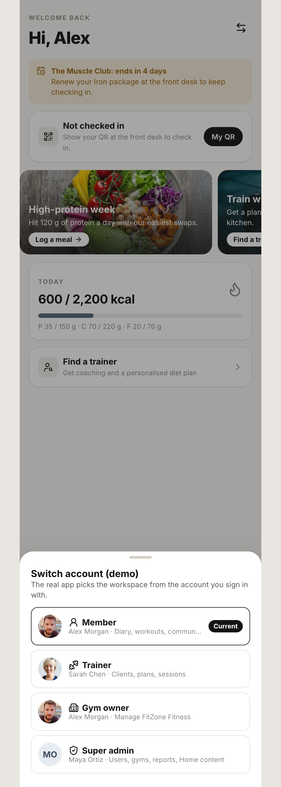
⇄ on any header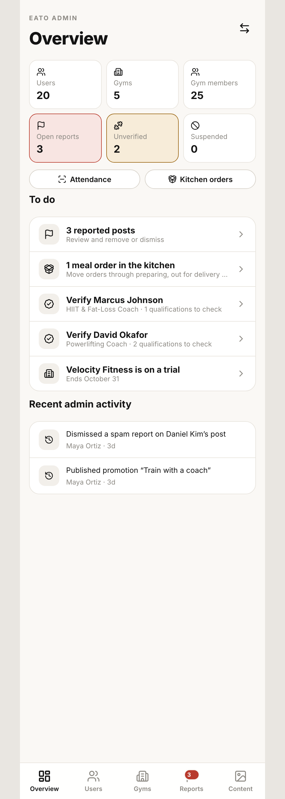
/adminSearch and filter users. Verify trainers, suspend or reinstate accounts. Suspension hides posts and removes trainers from search.
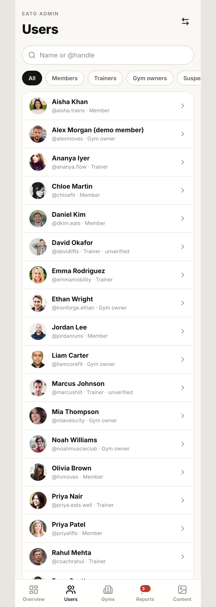
/admin/users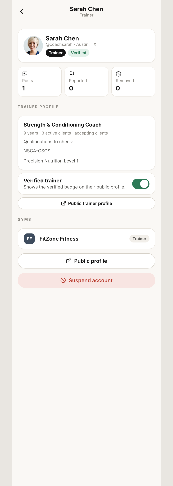
/admin/users/:userId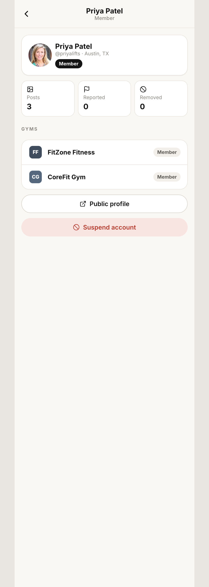
/admin/users/:userIdCreate a gym (14-day trial, assign owner), change plan (recorded only), suspend a gym to hide it from Explore.
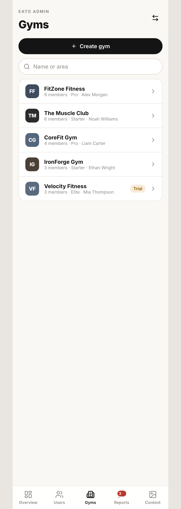
/admin/gyms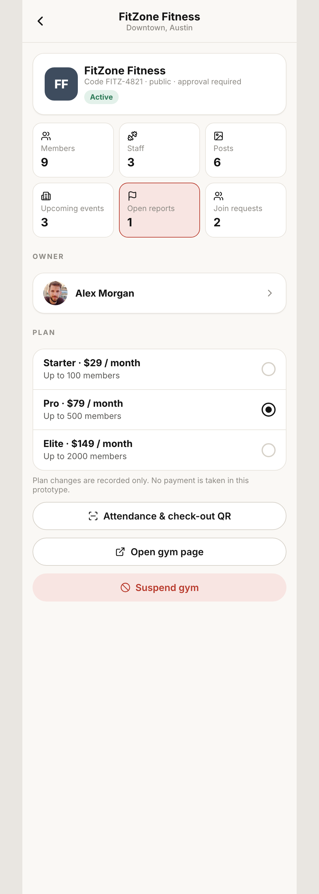
/admin/gyms/:gymId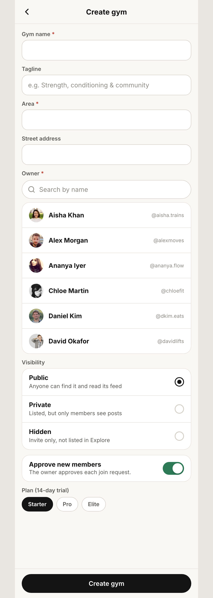
/admin/gyms/newReports grouped by post with reasons and reporters. Remove, Dismiss, or Suspend the author. Gym posts are shared with the owner's Review queue.
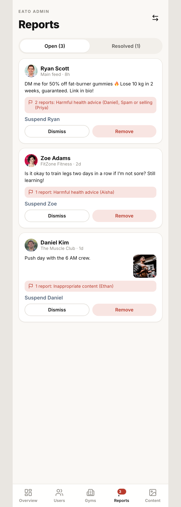
/admin/reportsCreate and edit Home promotions with a live preview. Save draft, publish, pause, reorder. Only live ones show on members' Home.
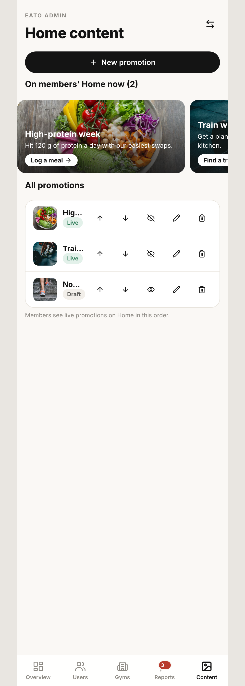
/admin/content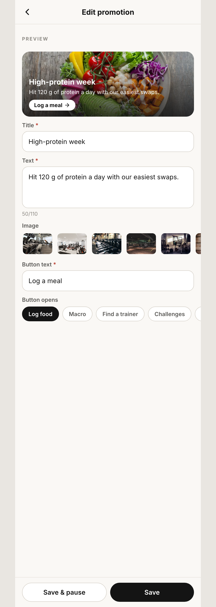
/admin/content/:promoId/admin/content/new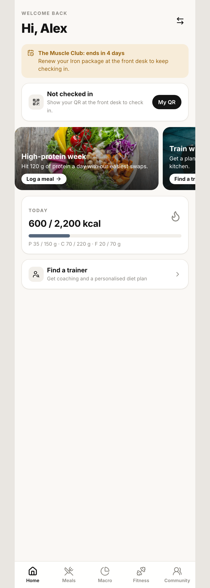
/Move trainer-placed meal orders: Start preparing → Send out → Mark delivered. Members track each step.
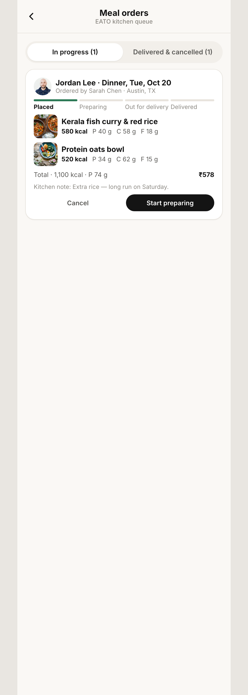
/admin/ordersAll gyms or one gym. Today, History, Failed scans, and per-gym check-out QR with download, on/off and regenerate.
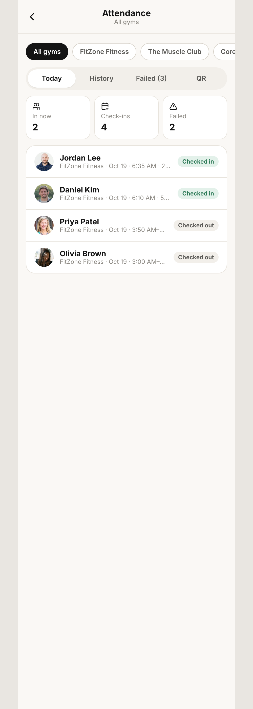
/admin/attendance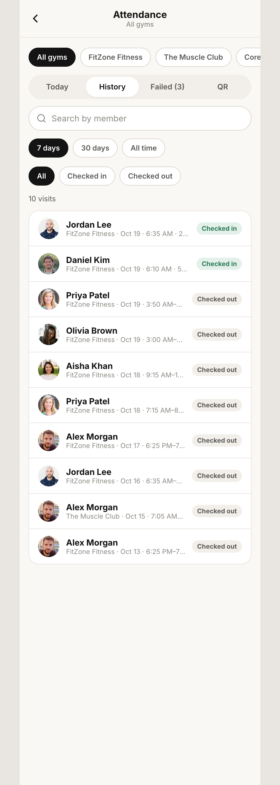
/admin/attendance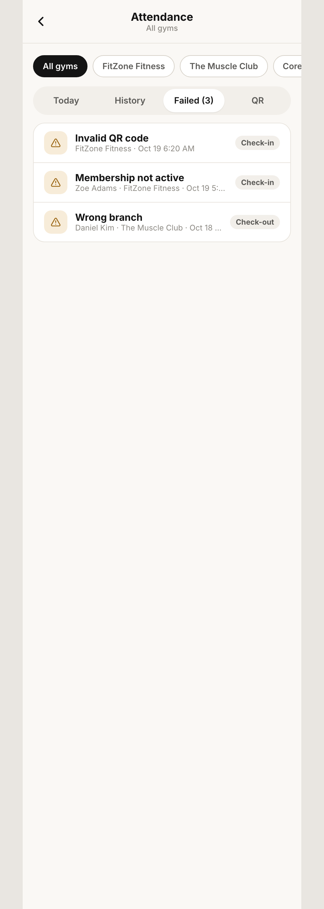
/admin/attendance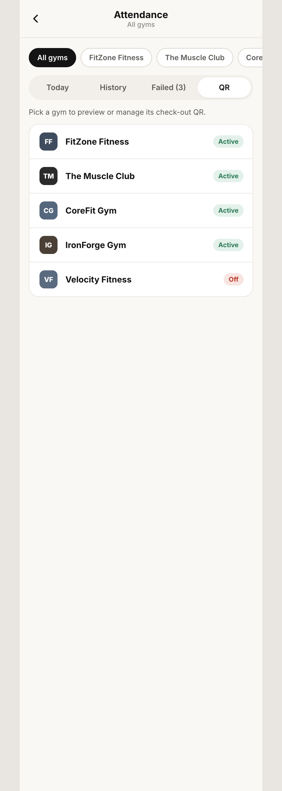
/admin/attendance?view=qr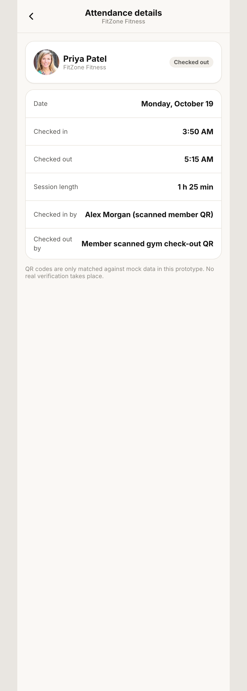
/admin/attendance/visit/:recordId